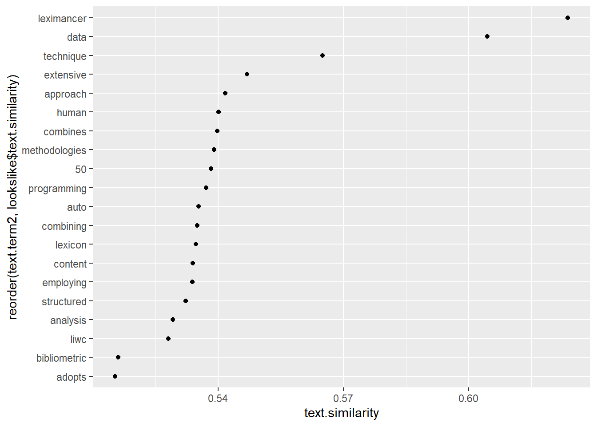

Code
library(tidyverse)
library(word2vec)
library(quanteda)
library(text)
library(udpipe)
library(plotly)
library(text2vec)library(tidyverse)
library(word2vec)
library(quanteda)
library(text)
library(udpipe)
library(plotly)
library(text2vec)list_articles <- read.csv2("nlp_full_data_final_18-08-2023.csv", encoding = "UTF-8") %>%
rename("entry_number" = 1)
list_references <- read.csv2("nlp_references_final_18-08-2023.csv", encoding = "UTF-8") %>%
rename("citing_art" = 1)
colnames(list_articles) <- gsub("\\.+", "_", colnames(list_articles))
colnames(list_articles) <- gsub("^[[:punct:]]+|[[:punct:]]+$", "", colnames(list_articles))
colnames(list_references) <- gsub("\\.+", "_", colnames(list_references))
colnames(list_references) <- gsub("^[[:punct:]]+|[[:punct:]]+$", "", colnames(list_references))
data_embeddings <- list_articles %>%
distinct(entry_number, .keep_all = TRUE) %>%
filter(marketing == 1) %>%
mutate("year" = substr(prism_coverDate, 7, 10)) %>%
mutate(keywords = str_replace_all(authkeywords, "\\|", "")) %>%
mutate(keywords = str_squish(keywords)) %>%
mutate("combined_text" = paste0(dc_title,". ", dc_description, ". ", keywords))
#write.csv(data_embeddings,"data_for_embeddings.csv")
#data_embeddings <- read.csv("data_for_embeddings.csv")
#embeddings <- read.csv("embeddings_bge.csv")data_embeddings %>%
head(5) %>%
select(entry_number, dc_creator, combined_text, year) entry_number dc_creator
1 1 Loupos P.
2 2 Krefeld-Schwalb A.
3 3 Kronrod A.
4 4 Chang H.H.
5 5 Dobrucalı Yelkenci B.
combined_text
1 What reviews foretell about opening weekend box office revenue: the harbinger of failure effect in the movie industry. We empirically investigate the harbinger of failure phenomenon in the motion picture industry by analyzing the pre-release reviews written on movies by film critics. We find that harbingers of failure do exist. Their positive (negative) pre-release movie reviews provide a strong predictive signal that the movie will turn out to be a flop (success). This signal persists even for the top critic category, which usually consists of professional critics, indicating that having expertise in a professional domain does not necessarily lead to correct predictions. Our findings challenge the current belief that positive reviews always help enhance box office revenue and shed new light on the influencer-predictor hypothesis. We further analyze the writing style of harbingers and provide new insights into their personality traits and cognitive biases.. Harbingers of failure Movies Preference heterogeneity Reviews Text analytics
2 Tighter nets for smaller fishes? Mapping the development of statistical practices in consumer research between 2008 and 2020. During the last decade, confidence in many social sciences, including consumer research, has been undermined by doubts about the replicability of empirical research findings. These doubts have led to increased calls to improve research practices and adopt new measures to increase the replicability of published work from various stakeholders such as funding agencies, journals, and scholars themselves. Despite these demands, it is unclear to which the research published in the leading consumer research journals has adhered to these calls for change. This article provides the first systematic empirical analysis of this question by surveying three crucial statistics of published consumer research over time: sample sizes, effect sizes, and the distribution of published p values. The authors compile a hand-coded sample of N = 258 articles published between 2008 and 2020 in the Journal of Consumer Psychology, the Journal of Consumer Research, and the Journal of Marketing Research. An automated text analysis across all publications in these three journals corroborates the representativeness of the hand-coded sample. Results reveal a substantial increase in sample sizes above and beyond the use of online samples along with a decrease in reported effect sizes. Effect and samples sizes are highly correlated which at least partially explains the reduction in reported effect sizes.. Experimental research methods False-positive results Review
3 Been There, Done That: How Episodic and Semantic Memory Affects the Language of Authentic and Fictitious Reviews. This article suggests a theory-driven approach to address the managerial problem of distinguishing between real and fake reviews. Building on memory research and linguistics, we predict that when recollecting an authentic experience in a product review, people rely to a greater extent on episodic memory. By contrast, when writing a fictitious review, people do not have episodic memory available to them. Therefore, they must rely to a greater extent on semantic memory. We suggest that reliance on these different memory types is reflected in the language used in authentic and fictitious reviews. We develop predictions about five linguistic features characterizing authentic versus fictitious reviews. We test our predictions via a multi-method approach, combining computational linguistics, experimental design, and machine learning. We employ a large-scale experiment to derive a dataset of reviews, as well as two datasets containing reviews from online platforms. We also test whether an algorithm relying on our theory-driven linguistic features is context independent, relative to other benchmark algorithms, and shows better cross-domain performance when tested across datasets. By developing a theory that extends memory and psycholinguistics research to the realm of word of mouth, this work contributes to our understanding of how authentic and fictitious reviews are created.. fake reviews lie detection linguistic features machine learning memory text analysis
4 More Voices Persuade: The Attentional Benefits of Voice Numerosity. The authors posit that in an initial exposure to a broadcast video, hearing different voices narrate (in succession) a persuasive message encourages consumers’ attention and processing of the message, thereby facilitating persuasion; this is referred to as the voice numerosity effect. Across four studies (plus validation and replication studies)—including two large-scale, real-world data sets (with more than 11,000 crowdfunding videos and over 3.6 million customer transactions, and more than 1,600 video ads) and two controlled experiments (with over 1,800 participants)—the results provide support for the hypothesized effect. The effect (1) has consequential, economic implications in a real-world marketplace, (2) is more pronounced when the message is easier to comprehend, (3) is more pronounced when consumers have the capacity to process the ad message, and (4) is mediated by the favorability of consumers’ cognitive responses. The authors demonstrate the use of machine learning, text mining, and natural language processing to process and analyze unstructured (multimedia) data. Theoretical and marketing implications are discussed.. advertising crowdfunding marketing communications persuasion sensory marketing videos voice voice numerosity
5 Online complaint handling: a text analytics-based classification framework. Purpose: This study aims to both identify content-based and interaction-based online consumer complaint types and predict complaint types according to the complaint magnitude rooted in complainants' personality traits, emotion, Twitter usage activity, as well as complaint's sentiment polarity, and interaction rate. Design/methodology/approach: In total, 297,000 complaint tweets were collected from Twitter, featuring over 220,000 consumer profiles and over 24 million user tweets. The obtained data were analyzed via two-step machine learning approach. Findings: This study proposes a set of content and profile features that can be employed for determining complaint types and reveals the relationship between content features, profile features and online complaint type. Originality/value: This study proposes a novel model for identifying types of online complaints, offering a set of content and profile features that can be used for predicting complaint type, and therefore introduces a flexible approach for enhancing online complaint management.. Complaint handling Machine learning Social CRM Text analytics Twitter
year
1 2023
2 2023
3 2023
4 2023
5 2023set.seed(42)
model <- word2vec(x = tolower(data_embeddings$combined_text), type = "skip-gram", dim = 100, iter = 100,, verbose=10, stopwords = stopwords("english"), window = "7")
embedding <- as.matrix(model)lookslike <- predict(model, c("text"), type = "nearest", top_n = 20) %>% as.data.frame()
lookslike text.term1 text.term2 text.similarity text.rank
1 text mining 0.9398133 1
2 text analysis 0.9035369 2
3 text using 0.8227125 3
4 text approach 0.7800652 4
5 text data 0.7243269 5
6 text combining 0.6864955 6
7 text automated 0.6830792 7
8 text based 0.6829328 8
9 text content 0.6822451 9
10 text g 0.6800215 10
11 text programming 0.6734449 11
12 text online 0.6709576 12
13 text software 0.6674001 13
14 text analytics 0.6666795 14
15 text language 0.6607617 15
16 text consumer 0.6499586 16
17 text uses 0.6492382 17
18 text leximancer 0.6413767 18
19 text nlp 0.6413354 19
20 text neuro 0.6397809 20lookslike %>%
ggplot(aes(x=text.similarity,y=reorder(text.term2,lookslike$text.similarity)))+
geom_point()fig <- lookslike %>%
ggplot(aes(x = text.similarity, y = reorder(text.term2, text.similarity))) +
geom_point(color = "royalblue", size = lookslike$text.similarity+2) +
theme_minimal() +
labs(x = "similarity score",
y = "") +
ggtitle("Top 20 similarity scores with term 'text'" ) +
theme(plot.title = element_text(hjust = 0.5))
ggplotly(fig)set.seed(42)
modelcbow <- word2vec(x = tolower(data_embeddings$combined_text), type = "cbow", dim = 100, iter = 100, verbose=10, stopwords = stopwords("english"), window = "7")
embedding1 <- as.matrix(modelcbow)
#embedding <- predict(modelcbow, c("mining"), type = "embedding")
#embeddinglookslike <- predict(modelcbow, c("text"), type = "nearest", top_n = 20) %>% as.data.frame()
lookslike text.term1 text.term2 text.similarity text.rank
1 text leximancer 0.6237223 1
2 text data 0.6044528 2
3 text technique 0.5650617 3
4 text extensive 0.5469280 4
5 text approach 0.5417628 5
6 text human 0.5401942 6
7 text combines 0.5397946 7
8 text methodologies 0.5390878 8
9 text 50 0.5382825 9
10 text programming 0.5371779 10
11 text auto 0.5353760 11
12 text combining 0.5350611 12
13 text lexicon 0.5346649 13
14 text content 0.5339657 14
15 text employing 0.5338814 15
16 text structured 0.5322220 16
17 text analysis 0.5291774 17
18 text liwc 0.5281757 18
19 text bibliometric 0.5161128 19
20 text adopts 0.5154158 20lookslike %>%
ggplot(aes(x=text.similarity,y=reorder(text.term2,lookslike$text.similarity)))+
geom_point()
fig <- lookslike %>%
ggplot(aes(x = text.similarity, y = reorder(text.term2, text.similarity))) +
geom_point(color = "royalblue", size = lookslike$text.similarity+2) +
theme_minimal() +
labs(x = "similarity score",
y = "") +
ggtitle("Top 20 similarity scores with term 'text'" ) +
theme(plot.title = element_text(hjust = 0.5))
ggplotly(fig)udpipe_download_model(language = "english") language
1 english-ewt
file_model
1 C:/Users/Olivier/Documents/GitHub/systematic_lit_review/english-ewt-ud-2.5-191206.udpipe
url
1 https://raw.githubusercontent.com/jwijffels/udpipe.models.ud.2.5/master/inst/udpipe-ud-2.5-191206/english-ewt-ud-2.5-191206.udpipe
download_failed download_message
1 FALSE OKudmodel_english <- udpipe_load_model(file = "english-ewt-ud-2.5-191206.udpipe")
t1=Sys.time()
UD <- udpipe_annotate(udmodel_english, x=data_embeddings$combined_text, trace =40, parallel.cores = 6)2023-10-05 10:22:40.647556 Annotating text fragment 1/405
2023-10-05 10:22:46.726197 Annotating text fragment 41/405
2023-10-05 10:22:53.383239 Annotating text fragment 81/405
2023-10-05 10:22:59.679681 Annotating text fragment 121/405
2023-10-05 10:23:06.868441 Annotating text fragment 161/405
2023-10-05 10:23:12.46403 Annotating text fragment 201/405
2023-10-05 10:23:18.375754 Annotating text fragment 241/405
2023-10-05 10:23:25.718799 Annotating text fragment 281/405
2023-10-05 10:23:32.045804 Annotating text fragment 321/405
2023-10-05 10:23:38.495724 Annotating text fragment 361/405
2023-10-05 10:23:44.557342 Annotating text fragment 401/405Sys.time()-t1Time difference of 1.074846 minsannotated_text <- UD %>% as.data.frame()
#write.csv(annotated_text,"annotated_udpipe.csv")lemma <- annotated_text %>%
filter(upos == "NOUN") %>%
group_by(lemma) %>%
summarize(n = n()) %>%
top_n(20)
fig <- ggplot(lemma, aes(x = n, y = reorder(lemma, n))) +
geom_point(color = "royalblue") +
theme_minimal() +
labs(x = "Frequency",
y = "Lemma") +
ggtitle("Top 20 Most Frequent Nouns") +
theme(plot.title = element_text(hjust = 0.5))
ggplotly(fig)from trankit import Pipeline
import pandas as pd
from pandas import json_normalize
df = pd.read_csv("data_for_embeddings.csv")
# initialize a pipeline for English
p = Pipeline('english')Loading pretrained XLM-Roberta, this may take a while...
Loading tokenizer for english
Loading tagger for english
Loading lemmatizer for english
Loading NER tagger for english
==================================================
Active language: english
==================================================
#test = p.posdep(df.loc[:5]['combined_text'][1])
#testdf = pd.DataFrame(pd.json_normalize(test['sentences'], 'tokens'))
#pos = p.posdep(all)
results = pd.DataFrame()
#part of speech tagging
for text in df['combined_text']:
pos = p.posdep(text)
pos_df = pd.json_normalize(pos['sentences'], 'tokens')
results = pd.concat([results,pos_df])
#lemmatization
results_lemma = pd.DataFrame()
for text in df['combined_text']:
lemma = p.lemmatize(text)
lemma_df = pd.json_normalize(lemma['sentences'], 'tokens')
results_lemma = pd.concat([results_lemma,lemma_df])
#join both data frames
results_complete = pd.concat([results, results_lemma['text'].rename("lemma")], axis=1)
results_complete["lemma"] = results_complete["text"]
#results_lemma.to_csv("lemmas_trankit.csv")
#results_complete.to_csv("annotated_trankit.csv")import pandas as pd
import plotly.express as px
# Charger les données à partir du DataFrame "results"
# Assurez-vous que "results" contient les mêmes colonnes que le fichier CSV original
# (par exemple, "upos" et "lemma")
results_complete = pd.read_csv("annotated_trankit.csv")
# Filtrer les lignes où 'upos' est égal à "NOUN"
noun_data = results_complete[results_complete['upos'] == 'NOUN']
# Regrouper par 'lemma' et compter le nombre d'occurrences
top_nouns = noun_data['lemma'].value_counts().reset_index()
top_nouns.columns = ['lemma', 'n']
top_nouns = top_nouns.head(20)
# Créer un graphique à l'aide de Plotly Express
if "fig" not in globals():
fig = px.scatter(top_nouns, x='n', y='lemma', color='lemma',
labels={'n': 'Frequency', 'lemma': 'Lemma'},
title='Top 20 Most Frequent Nouns')
# Personnaliser le style du graphique
fig.update_traces(marker=dict(size=12, opacity=0.6),
selector=dict(mode='markers'))
fig.update_layout(title_x=0.5, title_font=dict(size=20))
fig.update_layout(template="plotly_white")
# Afficher le graphique
#fig.show()
#fig.write_html("top_20_nouns_trankit_python.html")import stanza
import pandas as pd
from tqdm import tqdm
# Initialisation du modèle Stanza
nlp = stanza.Pipeline(lang='en', processors='tokenize, mwt, pos, lemma,ner', use_gpu=True, tokenize_pretokenized=False, tokenize_no_ssplit=True)2023-10-05 10:26:28 INFO: Checking for updates to resources.json in case models have been updated. Note: this behavior can be turned off with download_method=None or download_method=DownloadMethod.REUSE_RESOURCES
Downloading https://raw.githubusercontent.com/stanfordnlp/stanza-resources/main/resources_1.5.0.json: 0%| | 0.00/30.1k [00:00<?, ?B/s]
Downloading https://raw.githubusercontent.com/stanfordnlp/stanza-resources/main/resources_1.5.0.json: 216kB [00:00, 12.7MB/s]
2023-10-05 10:26:28 WARNING: Can not find mwt: default from official model list. Ignoring it.
2023-10-05 10:26:29 INFO: Loading these models for language: en (English):
=========================
| Processor | Package |
-------------------------
| tokenize | combined |
| pos | combined |
| lemma | combined |
| ner | ontonotes |
=========================
2023-10-05 10:26:29 INFO: Using device: cuda
2023-10-05 10:26:29 INFO: Loading: tokenize
2023-10-05 10:26:29 INFO: Loading: pos
2023-10-05 10:26:29 INFO: Loading: lemma
2023-10-05 10:26:29 INFO: Loading: ner
2023-10-05 10:26:29 INFO: Done loading processors!# Chargement du DataFrame depuis le fichier CSV
df = pd.read_csv("data_for_embeddings.csv")
annotated_df = pd.DataFrame()
for text in tqdm(df['combined_text'], desc="Processing Texts"):
doc = nlp(text)
dicts = doc.to_dict()
# Convertissez le dictionnaire en un DataFrame temporaire
temp_df = pd.DataFrame(dicts[0])
# Ajoutez les données du DataFrame temporaire à testdf en ignorant l'index
annotated_df = pd.concat([annotated_df, temp_df], ignore_index=True)
Processing Texts: 0%| | 0/405 [00:00<?, ?it/s]
Processing Texts: 0%| | 1/405 [00:00<02:28, 2.73it/s]
Processing Texts: 0%| | 2/405 [00:00<02:53, 2.33it/s]
Processing Texts: 1%| | 3/405 [00:01<03:01, 2.22it/s]
Processing Texts: 1%| | 4/405 [00:01<02:59, 2.23it/s]
Processing Texts: 1%|1 | 5/405 [00:02<02:51, 2.33it/s]
Processing Texts: 1%|1 | 6/405 [00:02<02:57, 2.24it/s]
Processing Texts: 2%|1 | 7/405 [00:03<03:12, 2.07it/s]
Processing Texts: 2%|1 | 8/405 [00:03<03:08, 2.11it/s]
Processing Texts: 2%|2 | 9/405 [00:04<03:16, 2.02it/s]
Processing Texts: 2%|2 | 10/405 [00:04<03:12, 2.05it/s]
Processing Texts: 3%|2 | 11/405 [00:05<02:53, 2.27it/s]
Processing Texts: 3%|2 | 12/405 [00:05<03:08, 2.09it/s]
Processing Texts: 3%|3 | 13/405 [00:06<03:37, 1.80it/s]
Processing Texts: 3%|3 | 14/405 [00:06<03:25, 1.90it/s]
Processing Texts: 4%|3 | 15/405 [00:07<03:32, 1.83it/s]
Processing Texts: 4%|3 | 16/405 [00:07<03:18, 1.96it/s]
Processing Texts: 4%|4 | 17/405 [00:08<03:32, 1.83it/s]
Processing Texts: 4%|4 | 18/405 [00:08<03:19, 1.94it/s]
Processing Texts: 5%|4 | 19/405 [00:09<03:18, 1.95it/s]
Processing Texts: 5%|4 | 20/405 [00:09<02:54, 2.21it/s]
Processing Texts: 5%|5 | 21/405 [00:10<03:16, 1.95it/s]
Processing Texts: 5%|5 | 22/405 [00:10<03:03, 2.09it/s]
Processing Texts: 6%|5 | 23/405 [00:11<02:56, 2.17it/s]
Processing Texts: 6%|5 | 24/405 [00:11<02:58, 2.13it/s]
Processing Texts: 6%|6 | 25/405 [00:12<03:07, 2.02it/s]
Processing Texts: 6%|6 | 26/405 [00:12<03:00, 2.10it/s]
Processing Texts: 7%|6 | 27/405 [00:13<03:28, 1.81it/s]
Processing Texts: 7%|6 | 28/405 [00:13<03:20, 1.88it/s]
Processing Texts: 7%|7 | 29/405 [00:14<03:22, 1.85it/s]
Processing Texts: 7%|7 | 30/405 [00:15<04:05, 1.53it/s]
Processing Texts: 8%|7 | 31/405 [00:16<03:58, 1.57it/s]
Processing Texts: 8%|7 | 32/405 [00:16<04:19, 1.44it/s]
Processing Texts: 8%|8 | 33/405 [00:17<03:44, 1.66it/s]
Processing Texts: 8%|8 | 34/405 [00:17<03:30, 1.76it/s]
Processing Texts: 9%|8 | 35/405 [00:18<03:14, 1.90it/s]
Processing Texts: 9%|8 | 36/405 [00:18<03:10, 1.94it/s]
Processing Texts: 9%|9 | 37/405 [00:19<03:00, 2.04it/s]
Processing Texts: 9%|9 | 38/405 [00:19<02:55, 2.09it/s]
Processing Texts: 10%|9 | 39/405 [00:19<02:50, 2.15it/s]
Processing Texts: 10%|9 | 40/405 [00:20<02:38, 2.30it/s]
Processing Texts: 10%|# | 41/405 [00:20<02:36, 2.33it/s]
Processing Texts: 10%|# | 42/405 [00:21<02:35, 2.33it/s]
Processing Texts: 11%|# | 43/405 [00:21<02:52, 2.10it/s]
Processing Texts: 11%|# | 44/405 [00:22<03:01, 1.99it/s]
Processing Texts: 11%|#1 | 45/405 [00:22<03:04, 1.95it/s]
Processing Texts: 11%|#1 | 46/405 [00:23<03:00, 1.99it/s]
Processing Texts: 12%|#1 | 47/405 [00:23<03:04, 1.94it/s]
Processing Texts: 12%|#1 | 48/405 [00:24<03:04, 1.94it/s]
Processing Texts: 12%|#2 | 49/405 [00:24<02:57, 2.01it/s]
Processing Texts: 12%|#2 | 50/405 [00:25<02:44, 2.16it/s]
Processing Texts: 13%|#2 | 51/405 [00:25<03:02, 1.94it/s]
Processing Texts: 13%|#2 | 52/405 [00:26<03:07, 1.88it/s]
Processing Texts: 13%|#3 | 53/405 [00:26<02:59, 1.96it/s]
Processing Texts: 13%|#3 | 54/405 [00:27<02:49, 2.07it/s]
Processing Texts: 14%|#3 | 55/405 [00:27<02:36, 2.23it/s]
Processing Texts: 14%|#3 | 56/405 [00:28<02:40, 2.18it/s]
Processing Texts: 14%|#4 | 57/405 [00:28<02:42, 2.15it/s]
Processing Texts: 14%|#4 | 58/405 [00:29<03:21, 1.73it/s]
Processing Texts: 15%|#4 | 59/405 [00:30<03:41, 1.56it/s]
Processing Texts: 15%|#4 | 60/405 [00:31<03:53, 1.48it/s]
Processing Texts: 15%|#5 | 61/405 [00:32<04:23, 1.31it/s]
Processing Texts: 15%|#5 | 62/405 [00:32<04:25, 1.29it/s]
Processing Texts: 16%|#5 | 63/405 [00:33<03:54, 1.46it/s]
Processing Texts: 16%|#5 | 64/405 [00:34<04:16, 1.33it/s]
Processing Texts: 16%|#6 | 65/405 [00:34<03:43, 1.52it/s]
Processing Texts: 16%|#6 | 66/405 [00:35<03:25, 1.65it/s]
Processing Texts: 17%|#6 | 67/405 [00:35<03:14, 1.74it/s]
Processing Texts: 17%|#6 | 68/405 [00:36<02:52, 1.95it/s]
Processing Texts: 17%|#7 | 69/405 [00:36<02:35, 2.16it/s]
Processing Texts: 17%|#7 | 70/405 [00:36<02:21, 2.37it/s]
Processing Texts: 18%|#7 | 71/405 [00:37<02:29, 2.24it/s]
Processing Texts: 18%|#7 | 72/405 [00:37<02:26, 2.27it/s]
Processing Texts: 18%|#8 | 73/405 [00:38<02:33, 2.17it/s]
Processing Texts: 18%|#8 | 74/405 [00:38<02:42, 2.04it/s]
Processing Texts: 19%|#8 | 75/405 [00:39<02:58, 1.85it/s]
Processing Texts: 19%|#8 | 76/405 [00:39<02:44, 2.00it/s]
Processing Texts: 19%|#9 | 77/405 [00:40<02:31, 2.17it/s]
Processing Texts: 19%|#9 | 78/405 [00:40<02:12, 2.46it/s]
Processing Texts: 20%|#9 | 79/405 [00:40<02:18, 2.36it/s]
Processing Texts: 20%|#9 | 80/405 [00:41<02:35, 2.08it/s]
Processing Texts: 20%|## | 81/405 [00:42<02:47, 1.94it/s]
Processing Texts: 20%|## | 82/405 [00:42<02:40, 2.01it/s]
Processing Texts: 20%|## | 83/405 [00:43<02:39, 2.02it/s]
Processing Texts: 21%|## | 84/405 [00:43<02:23, 2.23it/s]
Processing Texts: 21%|## | 85/405 [00:44<02:46, 1.92it/s]
Processing Texts: 21%|##1 | 86/405 [00:44<03:25, 1.55it/s]
Processing Texts: 21%|##1 | 87/405 [00:45<03:26, 1.54it/s]
Processing Texts: 22%|##1 | 88/405 [00:46<03:00, 1.76it/s]
Processing Texts: 22%|##1 | 89/405 [00:46<02:41, 1.96it/s]
Processing Texts: 22%|##2 | 90/405 [00:46<02:31, 2.08it/s]
Processing Texts: 22%|##2 | 91/405 [00:47<02:24, 2.17it/s]
Processing Texts: 23%|##2 | 92/405 [00:47<02:31, 2.06it/s]
Processing Texts: 23%|##2 | 93/405 [00:48<02:33, 2.03it/s]
Processing Texts: 23%|##3 | 94/405 [00:48<02:34, 2.01it/s]
Processing Texts: 23%|##3 | 95/405 [00:49<02:24, 2.14it/s]
Processing Texts: 24%|##3 | 96/405 [00:49<02:19, 2.21it/s]
Processing Texts: 24%|##3 | 97/405 [00:49<02:06, 2.44it/s]
Processing Texts: 24%|##4 | 98/405 [00:50<02:02, 2.50it/s]
Processing Texts: 25%|##4 | 100/405 [00:50<01:56, 2.61it/s]
Processing Texts: 25%|##4 | 101/405 [00:51<02:01, 2.50it/s]
Processing Texts: 25%|##5 | 102/405 [00:52<02:49, 1.79it/s]
Processing Texts: 25%|##5 | 103/405 [00:52<02:33, 1.97it/s]
Processing Texts: 26%|##5 | 104/405 [00:53<02:24, 2.09it/s]
Processing Texts: 26%|##5 | 105/405 [00:53<02:14, 2.23it/s]
Processing Texts: 26%|##6 | 106/405 [00:54<02:26, 2.05it/s]
Processing Texts: 26%|##6 | 107/405 [00:54<02:55, 1.70it/s]
Processing Texts: 27%|##6 | 108/405 [00:55<02:57, 1.68it/s]
Processing Texts: 27%|##6 | 109/405 [00:55<02:37, 1.88it/s]
Processing Texts: 27%|##7 | 110/405 [00:56<02:38, 1.86it/s]
Processing Texts: 27%|##7 | 111/405 [00:56<02:23, 2.06it/s]
Processing Texts: 28%|##7 | 112/405 [00:57<02:48, 1.74it/s]
Processing Texts: 28%|##7 | 113/405 [00:57<02:25, 2.01it/s]
Processing Texts: 28%|##8 | 114/405 [00:58<02:34, 1.88it/s]
Processing Texts: 28%|##8 | 115/405 [00:59<02:39, 1.82it/s]
Processing Texts: 29%|##8 | 116/405 [00:59<02:26, 1.97it/s]
Processing Texts: 29%|##8 | 117/405 [01:00<02:25, 1.97it/s]
Processing Texts: 29%|##9 | 118/405 [01:00<02:26, 1.95it/s]
Processing Texts: 29%|##9 | 119/405 [01:01<02:32, 1.88it/s]
Processing Texts: 30%|##9 | 120/405 [01:01<02:25, 1.97it/s]
Processing Texts: 30%|##9 | 121/405 [01:02<02:23, 1.98it/s]
Processing Texts: 30%|### | 122/405 [01:02<02:27, 1.92it/s]
Processing Texts: 30%|### | 123/405 [01:03<02:35, 1.82it/s]
Processing Texts: 31%|### | 124/405 [01:03<02:32, 1.85it/s]
Processing Texts: 31%|### | 125/405 [01:04<02:33, 1.83it/s]
Processing Texts: 31%|###1 | 126/405 [01:04<02:25, 1.91it/s]
Processing Texts: 31%|###1 | 127/405 [01:05<02:45, 1.68it/s]
Processing Texts: 32%|###1 | 128/405 [01:06<02:34, 1.79it/s]
Processing Texts: 32%|###1 | 129/405 [01:06<02:33, 1.80it/s]
Processing Texts: 32%|###2 | 130/405 [01:07<02:22, 1.93it/s]
Processing Texts: 32%|###2 | 131/405 [01:07<02:29, 1.83it/s]
Processing Texts: 33%|###2 | 132/405 [01:08<02:31, 1.81it/s]
Processing Texts: 33%|###2 | 133/405 [01:08<02:32, 1.78it/s]
Processing Texts: 33%|###3 | 134/405 [01:09<02:45, 1.63it/s]
Processing Texts: 33%|###3 | 135/405 [01:10<02:40, 1.68it/s]
Processing Texts: 34%|###3 | 136/405 [01:10<02:30, 1.79it/s]
Processing Texts: 34%|###3 | 137/405 [01:11<02:20, 1.90it/s]
Processing Texts: 34%|###4 | 138/405 [01:11<02:27, 1.81it/s]
Processing Texts: 34%|###4 | 139/405 [01:12<02:28, 1.80it/s]
Processing Texts: 35%|###4 | 140/405 [01:12<02:37, 1.68it/s]
Processing Texts: 35%|###4 | 141/405 [01:13<02:27, 1.79it/s]
Processing Texts: 35%|###5 | 142/405 [01:13<02:19, 1.89it/s]
Processing Texts: 35%|###5 | 143/405 [01:14<02:04, 2.11it/s]
Processing Texts: 36%|###5 | 144/405 [01:14<01:40, 2.60it/s]
Processing Texts: 36%|###5 | 145/405 [01:15<02:19, 1.86it/s]
Processing Texts: 36%|###6 | 146/405 [01:16<02:52, 1.50it/s]
Processing Texts: 36%|###6 | 147/405 [01:17<03:27, 1.24it/s]
Processing Texts: 37%|###6 | 148/405 [01:18<03:46, 1.14it/s]
Processing Texts: 37%|###6 | 149/405 [01:19<03:47, 1.13it/s]
Processing Texts: 37%|###7 | 150/405 [01:20<03:40, 1.15it/s]
Processing Texts: 37%|###7 | 151/405 [01:20<03:08, 1.35it/s]
Processing Texts: 38%|###7 | 152/405 [01:21<02:57, 1.43it/s]
Processing Texts: 38%|###7 | 153/405 [01:22<03:19, 1.26it/s]
Processing Texts: 38%|###8 | 154/405 [01:23<03:41, 1.13it/s]
Processing Texts: 38%|###8 | 155/405 [01:24<03:51, 1.08it/s]
Processing Texts: 39%|###8 | 156/405 [01:25<03:50, 1.08it/s]
Processing Texts: 39%|###8 | 157/405 [01:25<03:24, 1.21it/s]
Processing Texts: 39%|###9 | 158/405 [01:26<03:37, 1.14it/s]
Processing Texts: 39%|###9 | 159/405 [01:27<03:03, 1.34it/s]
Processing Texts: 40%|###9 | 160/405 [01:27<03:03, 1.34it/s]
Processing Texts: 40%|###9 | 161/405 [01:28<02:54, 1.39it/s]
Processing Texts: 40%|#### | 162/405 [01:29<02:39, 1.52it/s]
Processing Texts: 40%|#### | 163/405 [01:29<02:17, 1.76it/s]
Processing Texts: 40%|#### | 164/405 [01:30<02:24, 1.66it/s]
Processing Texts: 41%|#### | 165/405 [01:30<02:03, 1.94it/s]
Processing Texts: 41%|#### | 166/405 [01:31<02:22, 1.68it/s]
Processing Texts: 41%|####1 | 167/405 [01:31<02:10, 1.82it/s]
Processing Texts: 41%|####1 | 168/405 [01:32<02:16, 1.74it/s]
Processing Texts: 42%|####1 | 169/405 [01:32<02:10, 1.81it/s]
Processing Texts: 42%|####1 | 170/405 [01:33<02:14, 1.75it/s]
Processing Texts: 42%|####2 | 171/405 [01:33<02:00, 1.94it/s]
Processing Texts: 42%|####2 | 172/405 [01:34<02:03, 1.89it/s]
Processing Texts: 43%|####2 | 173/405 [01:34<02:00, 1.93it/s]
Processing Texts: 43%|####2 | 174/405 [01:35<01:57, 1.97it/s]
Processing Texts: 43%|####3 | 175/405 [01:35<01:46, 2.15it/s]
Processing Texts: 43%|####3 | 176/405 [01:36<01:55, 1.98it/s]
Processing Texts: 44%|####3 | 177/405 [01:37<02:15, 1.68it/s]
Processing Texts: 44%|####3 | 178/405 [01:37<02:08, 1.77it/s]
Processing Texts: 44%|####4 | 179/405 [01:38<02:07, 1.77it/s]
Processing Texts: 44%|####4 | 180/405 [01:38<01:49, 2.05it/s]
Processing Texts: 45%|####4 | 181/405 [01:39<01:52, 2.00it/s]
Processing Texts: 45%|####4 | 182/405 [01:39<01:56, 1.92it/s]
Processing Texts: 45%|####5 | 183/405 [01:40<01:56, 1.90it/s]
Processing Texts: 45%|####5 | 184/405 [01:40<01:51, 1.98it/s]
Processing Texts: 46%|####5 | 185/405 [01:40<01:38, 2.23it/s]
Processing Texts: 46%|####5 | 186/405 [01:41<01:46, 2.06it/s]
Processing Texts: 46%|####6 | 187/405 [01:42<01:53, 1.92it/s]
Processing Texts: 46%|####6 | 188/405 [01:42<01:56, 1.86it/s]
Processing Texts: 47%|####6 | 189/405 [01:43<01:56, 1.86it/s]
Processing Texts: 47%|####6 | 190/405 [01:43<01:50, 1.94it/s]
Processing Texts: 47%|####7 | 191/405 [01:44<01:52, 1.90it/s]
Processing Texts: 47%|####7 | 192/405 [01:44<01:43, 2.06it/s]
Processing Texts: 48%|####7 | 193/405 [01:44<01:29, 2.37it/s]
Processing Texts: 48%|####7 | 194/405 [01:45<01:45, 2.00it/s]
Processing Texts: 48%|####8 | 195/405 [01:45<01:36, 2.17it/s]
Processing Texts: 48%|####8 | 196/405 [01:46<01:31, 2.28it/s]
Processing Texts: 49%|####8 | 197/405 [01:46<01:24, 2.47it/s]
Processing Texts: 49%|####8 | 198/405 [01:47<01:21, 2.55it/s]
Processing Texts: 49%|####9 | 199/405 [01:47<01:19, 2.59it/s]
Processing Texts: 49%|####9 | 200/405 [01:47<01:25, 2.39it/s]
Processing Texts: 50%|####9 | 201/405 [01:48<01:29, 2.28it/s]
Processing Texts: 50%|####9 | 202/405 [01:48<01:26, 2.35it/s]
Processing Texts: 50%|##### | 203/405 [01:49<01:33, 2.16it/s]
Processing Texts: 50%|##### | 204/405 [01:50<01:55, 1.74it/s]
Processing Texts: 51%|##### | 205/405 [01:50<01:59, 1.67it/s]
Processing Texts: 51%|##### | 206/405 [01:51<02:03, 1.61it/s]
Processing Texts: 51%|#####1 | 207/405 [01:52<02:02, 1.62it/s]
Processing Texts: 51%|#####1 | 208/405 [01:52<01:49, 1.80it/s]
Processing Texts: 52%|#####1 | 209/405 [01:53<01:54, 1.71it/s]
Processing Texts: 52%|#####1 | 210/405 [01:53<01:48, 1.80it/s]
Processing Texts: 52%|#####2 | 211/405 [01:54<01:42, 1.89it/s]
Processing Texts: 52%|#####2 | 212/405 [01:54<01:58, 1.63it/s]
Processing Texts: 53%|#####2 | 213/405 [01:55<01:48, 1.77it/s]
Processing Texts: 53%|#####2 | 214/405 [01:55<01:44, 1.83it/s]
Processing Texts: 53%|#####3 | 215/405 [01:56<01:47, 1.77it/s]
Processing Texts: 53%|#####3 | 216/405 [01:57<01:46, 1.77it/s]
Processing Texts: 54%|#####3 | 217/405 [01:57<01:32, 2.04it/s]
Processing Texts: 54%|#####3 | 218/405 [01:58<02:00, 1.55it/s]
Processing Texts: 54%|#####4 | 219/405 [01:58<01:45, 1.76it/s]
Processing Texts: 54%|#####4 | 220/405 [01:59<01:36, 1.91it/s]
Processing Texts: 55%|#####4 | 221/405 [01:59<01:32, 1.99it/s]
Processing Texts: 55%|#####4 | 222/405 [02:00<01:34, 1.94it/s]
Processing Texts: 55%|#####5 | 223/405 [02:00<01:28, 2.07it/s]
Processing Texts: 55%|#####5 | 224/405 [02:01<01:35, 1.89it/s]
Processing Texts: 56%|#####5 | 225/405 [02:01<01:36, 1.86it/s]
Processing Texts: 56%|#####5 | 226/405 [02:02<01:30, 1.97it/s]
Processing Texts: 56%|#####6 | 227/405 [02:02<01:23, 2.13it/s]
Processing Texts: 56%|#####6 | 228/405 [02:03<01:28, 2.00it/s]
Processing Texts: 57%|#####6 | 229/405 [02:03<01:27, 2.00it/s]
Processing Texts: 57%|#####6 | 230/405 [02:04<01:27, 2.00it/s]
Processing Texts: 57%|#####7 | 231/405 [02:04<01:31, 1.91it/s]
Processing Texts: 57%|#####7 | 232/405 [02:05<01:32, 1.88it/s]
Processing Texts: 58%|#####7 | 233/405 [02:05<01:29, 1.93it/s]
Processing Texts: 58%|#####7 | 234/405 [02:06<01:37, 1.75it/s]
Processing Texts: 58%|#####8 | 235/405 [02:07<01:38, 1.72it/s]
Processing Texts: 58%|#####8 | 236/405 [02:07<01:33, 1.81it/s]
Processing Texts: 59%|#####8 | 237/405 [02:08<01:32, 1.81it/s]
Processing Texts: 59%|#####8 | 238/405 [02:08<01:30, 1.85it/s]
Processing Texts: 59%|#####9 | 239/405 [02:09<01:29, 1.85it/s]
Processing Texts: 59%|#####9 | 240/405 [02:09<01:19, 2.06it/s]
Processing Texts: 60%|#####9 | 241/405 [02:10<01:18, 2.10it/s]
Processing Texts: 60%|#####9 | 242/405 [02:10<01:29, 1.83it/s]
Processing Texts: 60%|###### | 243/405 [02:11<01:21, 1.98it/s]
Processing Texts: 60%|###### | 244/405 [02:11<01:19, 2.03it/s]
Processing Texts: 60%|###### | 245/405 [02:12<01:15, 2.12it/s]
Processing Texts: 61%|###### | 246/405 [02:12<01:14, 2.15it/s]
Processing Texts: 61%|###### | 247/405 [02:12<01:11, 2.22it/s]
Processing Texts: 61%|######1 | 248/405 [02:13<01:14, 2.11it/s]
Processing Texts: 61%|######1 | 249/405 [02:14<01:32, 1.68it/s]
Processing Texts: 62%|######1 | 250/405 [02:15<01:47, 1.44it/s]
Processing Texts: 62%|######1 | 251/405 [02:15<01:47, 1.43it/s]
Processing Texts: 62%|######2 | 252/405 [02:16<01:42, 1.49it/s]
Processing Texts: 62%|######2 | 253/405 [02:17<01:36, 1.58it/s]
Processing Texts: 63%|######2 | 254/405 [02:17<01:26, 1.75it/s]
Processing Texts: 63%|######2 | 255/405 [02:18<01:39, 1.50it/s]
Processing Texts: 63%|######3 | 256/405 [02:18<01:33, 1.60it/s]
Processing Texts: 63%|######3 | 257/405 [02:19<01:22, 1.80it/s]
Processing Texts: 64%|######3 | 258/405 [02:19<01:10, 2.09it/s]
Processing Texts: 64%|######3 | 259/405 [02:19<01:04, 2.26it/s]
Processing Texts: 64%|######4 | 260/405 [02:20<00:59, 2.42it/s]
Processing Texts: 64%|######4 | 261/405 [02:21<01:21, 1.78it/s]
Processing Texts: 65%|######4 | 262/405 [02:22<01:31, 1.56it/s]
Processing Texts: 65%|######4 | 263/405 [02:22<01:34, 1.51it/s]
Processing Texts: 65%|######5 | 264/405 [02:23<01:34, 1.50it/s]
Processing Texts: 65%|######5 | 265/405 [02:24<01:42, 1.37it/s]
Processing Texts: 66%|######5 | 266/405 [02:25<01:49, 1.27it/s]
Processing Texts: 66%|######5 | 267/405 [02:25<01:42, 1.35it/s]
Processing Texts: 66%|######6 | 268/405 [02:26<01:32, 1.48it/s]
Processing Texts: 66%|######6 | 269/405 [02:27<01:45, 1.29it/s]
Processing Texts: 67%|######6 | 270/405 [02:28<01:37, 1.38it/s]
Processing Texts: 67%|######6 | 271/405 [02:28<01:34, 1.42it/s]
Processing Texts: 67%|######7 | 272/405 [02:29<01:20, 1.65it/s]
Processing Texts: 67%|######7 | 273/405 [02:29<01:11, 1.85it/s]
Processing Texts: 68%|######7 | 274/405 [02:29<01:04, 2.02it/s]
Processing Texts: 68%|######7 | 275/405 [02:30<00:59, 2.19it/s]
Processing Texts: 68%|######8 | 276/405 [02:30<01:04, 2.00it/s]
Processing Texts: 68%|######8 | 277/405 [02:31<01:09, 1.84it/s]
Processing Texts: 69%|######8 | 278/405 [02:31<01:07, 1.89it/s]
Processing Texts: 69%|######8 | 279/405 [02:32<01:05, 1.93it/s]
Processing Texts: 69%|######9 | 280/405 [02:32<01:05, 1.91it/s]
Processing Texts: 69%|######9 | 281/405 [02:33<01:05, 1.90it/s]
Processing Texts: 70%|######9 | 282/405 [02:34<01:04, 1.89it/s]
Processing Texts: 70%|######9 | 283/405 [02:34<01:01, 1.99it/s]
Processing Texts: 70%|####### | 284/405 [02:34<00:55, 2.16it/s]
Processing Texts: 70%|####### | 285/405 [02:35<01:13, 1.62it/s]
Processing Texts: 71%|####### | 286/405 [02:36<01:10, 1.69it/s]
Processing Texts: 71%|####### | 287/405 [02:36<01:03, 1.86it/s]
Processing Texts: 71%|#######1 | 288/405 [02:37<01:06, 1.76it/s]
Processing Texts: 71%|#######1 | 289/405 [02:38<01:09, 1.66it/s]
Processing Texts: 72%|#######1 | 290/405 [02:38<01:11, 1.61it/s]
Processing Texts: 72%|#######1 | 291/405 [02:39<01:07, 1.68it/s]
Processing Texts: 72%|#######2 | 292/405 [02:39<01:09, 1.62it/s]
Processing Texts: 72%|#######2 | 293/405 [02:40<01:00, 1.84it/s]
Processing Texts: 73%|#######2 | 294/405 [02:40<00:57, 1.93it/s]
Processing Texts: 73%|#######2 | 295/405 [02:41<00:56, 1.93it/s]
Processing Texts: 73%|#######3 | 296/405 [02:41<00:56, 1.93it/s]
Processing Texts: 73%|#######3 | 297/405 [02:42<00:59, 1.82it/s]
Processing Texts: 74%|#######3 | 298/405 [02:42<00:52, 2.06it/s]
Processing Texts: 74%|#######3 | 299/405 [02:43<01:02, 1.70it/s]
Processing Texts: 74%|#######4 | 300/405 [02:44<00:58, 1.79it/s]
Processing Texts: 74%|#######4 | 301/405 [02:44<00:56, 1.83it/s]
Processing Texts: 75%|#######4 | 303/405 [02:45<00:47, 2.16it/s]
Processing Texts: 75%|#######5 | 304/405 [02:45<00:48, 2.08it/s]
Processing Texts: 75%|#######5 | 305/405 [02:46<00:49, 2.03it/s]
Processing Texts: 76%|#######5 | 306/405 [02:46<00:51, 1.93it/s]
Processing Texts: 76%|#######5 | 307/405 [02:47<00:49, 1.99it/s]
Processing Texts: 76%|#######6 | 308/405 [02:47<00:48, 1.98it/s]
Processing Texts: 76%|#######6 | 309/405 [02:48<00:47, 2.03it/s]
Processing Texts: 77%|#######6 | 310/405 [02:48<00:47, 2.01it/s]
Processing Texts: 77%|#######6 | 311/405 [02:49<01:00, 1.54it/s]
Processing Texts: 77%|#######7 | 312/405 [02:50<01:02, 1.49it/s]
Processing Texts: 77%|#######7 | 313/405 [02:50<00:49, 1.85it/s]
Processing Texts: 78%|#######7 | 314/405 [02:51<00:47, 1.93it/s]
Processing Texts: 78%|#######7 | 315/405 [02:51<00:47, 1.91it/s]
Processing Texts: 78%|#######8 | 316/405 [02:52<00:48, 1.82it/s]
Processing Texts: 78%|#######8 | 317/405 [02:52<00:49, 1.79it/s]
Processing Texts: 79%|#######8 | 318/405 [02:53<00:43, 2.01it/s]
Processing Texts: 79%|#######8 | 319/405 [02:53<00:39, 2.18it/s]
Processing Texts: 79%|#######9 | 320/405 [02:54<00:43, 1.96it/s]
Processing Texts: 79%|#######9 | 321/405 [02:54<00:41, 2.01it/s]
Processing Texts: 80%|#######9 | 322/405 [02:54<00:36, 2.30it/s]
Processing Texts: 80%|#######9 | 323/405 [02:55<00:33, 2.42it/s]
Processing Texts: 80%|######## | 324/405 [02:55<00:30, 2.67it/s]
Processing Texts: 80%|######## | 325/405 [02:55<00:28, 2.82it/s]
Processing Texts: 80%|######## | 326/405 [02:56<00:26, 3.03it/s]
Processing Texts: 81%|######## | 327/405 [02:56<00:33, 2.31it/s]
Processing Texts: 81%|######## | 328/405 [02:57<00:43, 1.78it/s]
Processing Texts: 81%|########1 | 329/405 [02:58<00:50, 1.50it/s]
Processing Texts: 81%|########1 | 330/405 [02:58<00:40, 1.83it/s]
Processing Texts: 82%|########1 | 331/405 [02:59<00:45, 1.64it/s]
Processing Texts: 82%|########1 | 332/405 [03:00<00:52, 1.40it/s]
Processing Texts: 82%|########2 | 333/405 [03:01<00:58, 1.24it/s]
Processing Texts: 82%|########2 | 334/405 [03:02<00:48, 1.45it/s]
Processing Texts: 83%|########2 | 335/405 [03:02<00:44, 1.59it/s]
Processing Texts: 83%|########2 | 336/405 [03:02<00:37, 1.84it/s]
Processing Texts: 83%|########3 | 337/405 [03:03<00:32, 2.07it/s]
Processing Texts: 83%|########3 | 338/405 [03:03<00:28, 2.31it/s]
Processing Texts: 84%|########3 | 339/405 [03:03<00:27, 2.37it/s]
Processing Texts: 84%|########3 | 340/405 [03:04<00:27, 2.32it/s]
Processing Texts: 84%|########4 | 341/405 [03:04<00:28, 2.21it/s]
Processing Texts: 84%|########4 | 342/405 [03:05<00:28, 2.20it/s]
Processing Texts: 85%|########4 | 343/405 [03:06<00:39, 1.56it/s]
Processing Texts: 85%|########4 | 344/405 [03:06<00:33, 1.84it/s]
Processing Texts: 85%|########5 | 345/405 [03:07<00:32, 1.83it/s]
Processing Texts: 85%|########5 | 346/405 [03:07<00:30, 1.91it/s]
Processing Texts: 86%|########5 | 347/405 [03:08<00:27, 2.14it/s]
Processing Texts: 86%|########5 | 348/405 [03:08<00:23, 2.39it/s]
Processing Texts: 86%|########6 | 349/405 [03:08<00:21, 2.58it/s]
Processing Texts: 86%|########6 | 350/405 [03:09<00:25, 2.18it/s]
Processing Texts: 87%|########6 | 351/405 [03:09<00:26, 2.00it/s]
Processing Texts: 87%|########6 | 352/405 [03:10<00:25, 2.07it/s]
Processing Texts: 87%|########7 | 353/405 [03:10<00:24, 2.11it/s]
Processing Texts: 87%|########7 | 354/405 [03:11<00:23, 2.19it/s]
Processing Texts: 88%|########7 | 355/405 [03:12<00:35, 1.42it/s]
Processing Texts: 88%|########7 | 356/405 [03:12<00:29, 1.65it/s]
Processing Texts: 88%|########8 | 357/405 [03:13<00:28, 1.71it/s]
Processing Texts: 88%|########8 | 358/405 [03:13<00:24, 1.95it/s]
Processing Texts: 89%|########8 | 359/405 [03:14<00:22, 2.05it/s]
Processing Texts: 89%|########8 | 360/405 [03:14<00:24, 1.87it/s]
Processing Texts: 89%|########9 | 361/405 [03:15<00:19, 2.23it/s]
Processing Texts: 89%|########9 | 362/405 [03:15<00:18, 2.31it/s]
Processing Texts: 90%|########9 | 363/405 [03:17<00:32, 1.28it/s]
Processing Texts: 90%|########9 | 364/405 [03:17<00:25, 1.59it/s]
Processing Texts: 90%|######### | 365/405 [03:17<00:23, 1.72it/s]
Processing Texts: 90%|######### | 366/405 [03:18<00:19, 2.00it/s]
Processing Texts: 91%|######### | 367/405 [03:18<00:17, 2.12it/s]
Processing Texts: 91%|######### | 368/405 [03:19<00:17, 2.09it/s]
Processing Texts: 91%|#########1| 369/405 [03:19<00:14, 2.47it/s]
Processing Texts: 91%|#########1| 370/405 [03:19<00:13, 2.56it/s]
Processing Texts: 92%|#########1| 371/405 [03:20<00:15, 2.18it/s]
Processing Texts: 92%|#########1| 372/405 [03:20<00:17, 1.89it/s]
Processing Texts: 92%|#########2| 373/405 [03:21<00:17, 1.83it/s]
Processing Texts: 92%|#########2| 374/405 [03:22<00:16, 1.84it/s]
Processing Texts: 93%|#########2| 375/405 [03:22<00:14, 2.04it/s]
Processing Texts: 93%|#########2| 376/405 [03:22<00:11, 2.44it/s]
Processing Texts: 93%|#########3| 377/405 [03:23<00:11, 2.47it/s]
Processing Texts: 93%|#########3| 378/405 [03:23<00:12, 2.10it/s]
Processing Texts: 94%|#########3| 379/405 [03:24<00:13, 1.97it/s]
Processing Texts: 94%|#########3| 380/405 [03:24<00:12, 2.02it/s]
Processing Texts: 94%|#########4| 381/405 [03:25<00:11, 2.17it/s]
Processing Texts: 94%|#########4| 382/405 [03:25<00:12, 1.82it/s]
Processing Texts: 95%|#########4| 383/405 [03:26<00:11, 1.84it/s]
Processing Texts: 95%|#########4| 384/405 [03:27<00:13, 1.60it/s]
Processing Texts: 95%|#########5| 385/405 [03:27<00:11, 1.74it/s]
Processing Texts: 95%|#########5| 386/405 [03:28<00:09, 1.97it/s]
Processing Texts: 96%|#########5| 387/405 [03:28<00:07, 2.39it/s]
Processing Texts: 96%|#########5| 388/405 [03:28<00:06, 2.53it/s]
Processing Texts: 96%|#########6| 389/405 [03:29<00:06, 2.39it/s]
Processing Texts: 96%|#########6| 390/405 [03:29<00:06, 2.31it/s]
Processing Texts: 97%|#########6| 391/405 [03:29<00:05, 2.74it/s]
Processing Texts: 97%|#########6| 392/405 [03:30<00:05, 2.47it/s]
Processing Texts: 97%|#########7| 393/405 [03:30<00:04, 2.50it/s]
Processing Texts: 97%|#########7| 394/405 [03:31<00:04, 2.46it/s]
Processing Texts: 98%|#########7| 395/405 [03:31<00:04, 2.09it/s]
Processing Texts: 98%|#########7| 396/405 [03:32<00:04, 1.97it/s]
Processing Texts: 98%|#########8| 397/405 [03:32<00:04, 1.84it/s]
Processing Texts: 98%|#########8| 398/405 [03:33<00:04, 1.72it/s]
Processing Texts: 99%|#########8| 399/405 [03:33<00:03, 1.93it/s]
Processing Texts: 99%|#########8| 400/405 [03:34<00:02, 1.87it/s]
Processing Texts: 99%|#########9| 401/405 [03:34<00:01, 2.05it/s]
Processing Texts: 99%|#########9| 402/405 [03:35<00:01, 1.98it/s]
Processing Texts: 100%|#########9| 403/405 [03:36<00:01, 1.82it/s]
Processing Texts: 100%|#########9| 404/405 [03:36<00:00, 1.84it/s]
Processing Texts: 100%|##########| 405/405 [03:36<00:00, 2.26it/s]
#annotated_df.to_csv("annotated_stanza.csv")annotation_stanza <- read.csv("annotated_stanza.csv")
lemma <- annotation_stanza %>%
filter(upos == "NOUN") %>%
group_by(lemma) %>%
summarize(n = n()) %>%
top_n(20)
fig <- ggplot(lemma, aes(x = n, y = reorder(lemma, n))) +
geom_point(color = "royalblue") +
theme_minimal() +
labs(x = "Frequency",
y = "Lemma") +
ggtitle("Top 20 Most Frequent Nouns") +
theme(plot.title = element_text(hjust = 0.5))
ggplotly(fig)